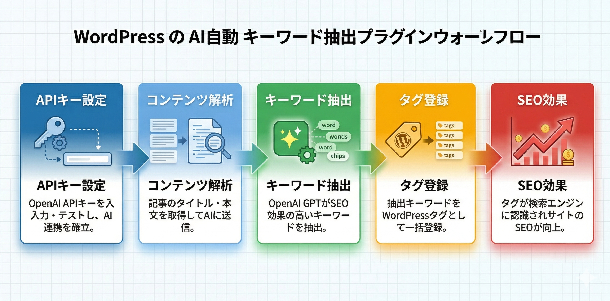

Kashiwazaki SEO Auto Keywords マニュアル

OpenAI GPTを活用して、投稿・固定ページ・カスタム投稿タイプ・メディアからSEOキーワードを自動抽出し、WordPressタグとして登録するプラグインです。
WordPressサイトの運営では、投稿ごとに適切なタグを設定することが検索エンジン最適化の基本とされています。しかし、記事数が増えるほど手作業でのキーワード選定やタグ付けは負担が大きくなります。本プラグインは、OpenAI GPTによるAI解析を活用し、記事内容から最適なキーワードを自動で抽出したうえでWordPressタグとして一括登録できる管理者向けツールです。キーワード抽出とタグ登録を2ステップに分離することで、管理者が結果を確認してから反映できる安全な運用を実現しています。
主な機能
AIキーワード抽出
OpenAI GPTが記事内容を解析し、SEOに効果的なキーワードをワンクリック抽出
一括処理
数百件の投稿を一括でAI処理。フィルター・ソート・プログレスバー付き
タグ自動登録
抽出したキーワードをWordPressタグとして一括登録。2ステップ方式で安全に運用
全体ワークフロー

SEO / GEO における強み
本プラグインはJSON-LDやmetaタグを出力する機能は持っていません。あくまでWordPressの投稿に対してAIでキーワードを抽出し、タグとして登録する管理ツールです。しかし、適切なタグ運用はSEOおよびGEO（Generative Engine Optimization）の観点からサイト全体の評価向上に役立つ可能性があります。
WordPressタグによるトピック明示
WordPressのタグはページのトピックを分類する仕組みであり、検索エンジンのクローラーがサイト構造やコンテンツの主題を把握する手がかりとして役立ちます。AIが記事内容から抽出した的確なキーワードをタグとして設定することで、各ページが扱うテーマを明確に示せる可能性が高まります。
内部リンク戦略への活用
タグアーカイブページは関連コンテンツを自動的にグループ化します。AIによって抽出されたキーワードを基にタグを統一的に付与することで、サイト内の関連記事同士がタグページを通じて結びつき、内部リンク構造の強化に役立ちます。
一括処理による網羅的なキーワードカバレッジ
サイト全体の投稿を一括でAI処理できるため、タグの付け漏れや粒度のばらつきを抑えられます。すべての記事に一貫したキーワードが設定されている状態は、検索エンジンがサイトの専門性やトピック網羅性を評価する際にプラスに働く可能性があります。
GEO（生成AI検索）への対応
ChatGPT SearchやGoogle AI Overviewなどの生成AI検索では、AIがサイト内のコンテンツ関係を理解したうえで回答を生成します。タグによってコンテンツ間のトピック関連性が整理されていると、AIがサイトの情報構造を把握しやすくなり、引用や参照の対象として選ばれる可能性が高まります。
目次
| ページ | 内容 |
|---|---|
| 概要 | プラグインの機能概要と全体像 |
| インストール・初期設定 | インストール手順、APIキー設定、メタボックスの使い方 |
| 一括キーワード生成＆タグ登録 | 一括処理画面の操作方法とタグ登録の手順 |
| トラブルシューティング | よくある問題と解決方法 |
動作要件
| 項目 | 要件 |
|---|---|
| WordPress | 5.0以上 |
| PHP | 7.4以上 |
| OpenAI APIキー | 必須 |